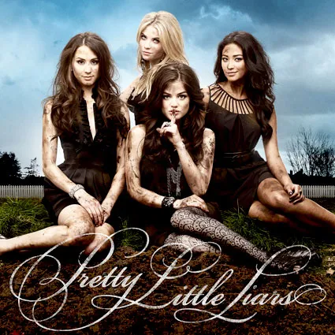
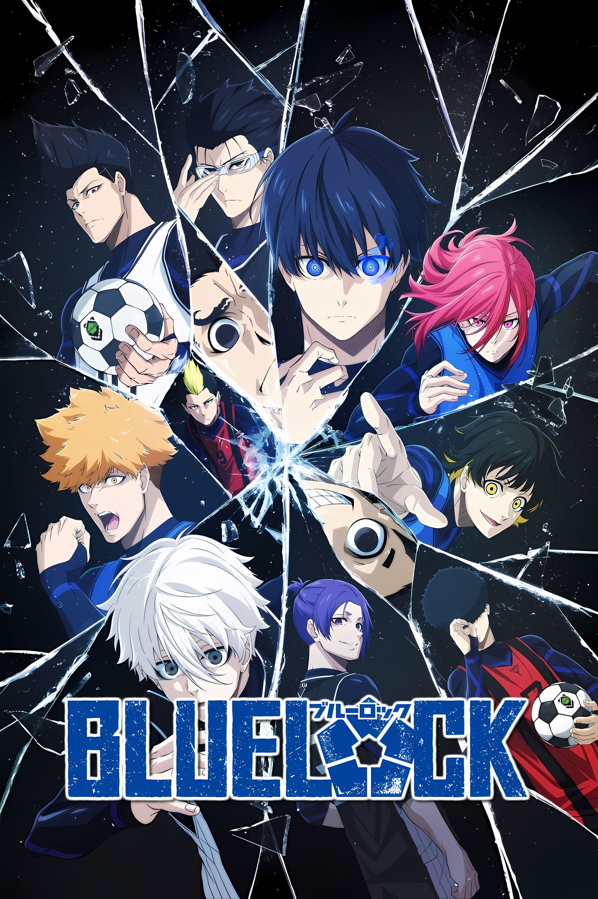
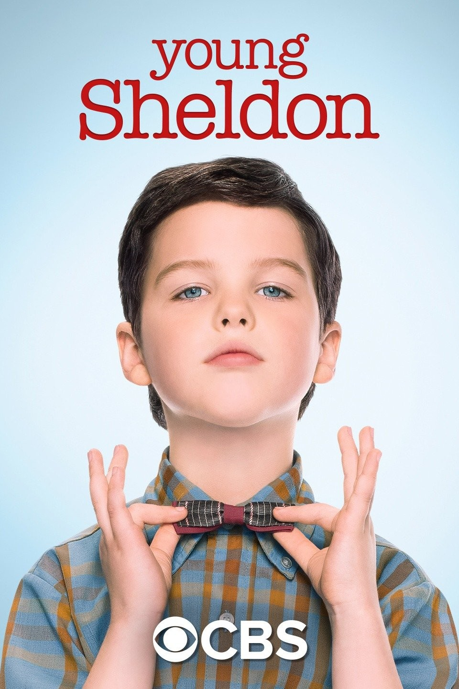
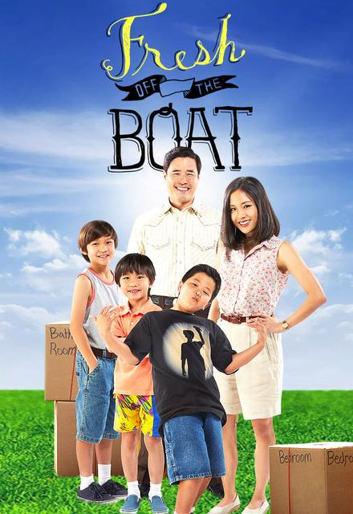

Popular shows in Pop Culture

Pretty Little Liars
Pretty Little Liars was a very popular TV show, especially on social media. It was the most-watched series on ABC Family and was a huge hit on social media.

Blue Lock
Blue Lock has gained significant popularity, with the manga surpassing 40 million copies sold and the anime airing from October 2022 to March 2023.

Young Sheldon
The show's popularity is demonstrated by its high viewership numbers on CBS, Netflix, and other streaming services. It has had a big impact on pop culture, with some saying that it has turned old shows into big pop culture moments.

Fresh Off the Boat
The show has gained significant popularity, particularly for its portrayal of Asian American culture and family dynamics, becoming a game-changer for representation on television.